Фон - основные свойства
Фон оказывает значительное воздействие на дизайн сайта. Он помогает создать впечатляюще выглядящий сайт, установить группирование и определить приоритет, фон также серьёзно влияет на юзабилити сайта.
Фон элемента HTML — это то, что появляется за текстом. В CSS фон элемента может быть сплошного цвета, изображением, градиентом или их комбинацией. Когда мы решаем, как реализовать такой фон, то должны понимать, что каждый фон влияет на общий вид нашего сайта.
Хотя CSS позволяет применять фон к элементу любого типа, он в основном используется для блочных элементов.
Фон применяется только к целевому элементу. Учитывая, что у большинства элементов HTML фон прозрачный, применение фона к <body> будет выглядеть так, словно он применяется ко всем элементам.
- Установка фонового цвета background-color
- Установка фонового изображения background-image
- Повторение фонового изображения background-repeat
- Начальное положение фонового изображения background-position
- Фиксация фонового изображения background-attachment
- Область позиционирования фонового изображения background-origin
- Выведение фона под границами background-clip
- Масштабирование фонового изображения background-size
- Универсальное свойство background
Универсальное стилевое свойство background на сайтах используется не только по своему прямому назначению — для изменения цвета фона и добавления фонового изображения к элементам, но и для некоторых не слишком очевидных вещей. Вот некоторые области применения background.
- Смена иконки при наведении на неё курсора мыши - Спрайты display
- Вывод иконок Font Awesome
- Бесшовные фоны и узоры для сайтов
- Сложные фоновые узоры
- Создание повторяющегося узора без рисунков.
Добавление цвета фона
Самый быстрый способ добавить фон к элементу — это установить однотонный фон с помощью свойства background-color.
Свойство background-color используется строго для установки сплошной фоновой заливки. Весь элемент будет залит простым фоновым цветом. Имейте в виду, что всегда следует выбирать подходящий цвет текста, чтобы сохранить содержимое читабельным.
background-color
Определяет цвет фона элемента.
Хотя это свойство не наследует свойства своего родителя, из-за того, что начальное значение устанавливается прозрачным, цвет фона дочерних элементов совпадает с цветом фона родительского элемента.
Синтаксис
Значения
-
<цвет>
При добавлении цвета фона у нас есть несколько вариантов значений, которые мы можем использовать. Подобно другим цветовым значениям мы можем выбрать из ключевых слов, шестнадцатеричных кодов и значений RGB, RGBa, HSL и HSLa. -
transparent
Устанавливает прозрачный фон.
Прозрачный фон
При использовании значения RGBa или HSLa в качестве прозрачного цвета фона хорошей идеей будет обеспечить также запасной цвет, потому что не все браузеры понимают RGBa или HSLa. И когда браузер встречает значение, которое он не распознаёт, то игнорирует его.
К счастью, есть простой способ обеспечить запасной вариант для фона. CSS каскадирует с верхней части файла до его низа, таким образом, мы можем использовать два свойства background-color в едином наборе правил. Первое свойство background-color будет включать «безопасный» цвет фона в виде шестнадцатеричного значения, а второе свойство background-color будет использовать RGBa или HSLa.
При этом, если браузер понимает значение RGBa или HSLa, то отобразит заданный полупрозрачный фон и сквозь него будет проступать фон веб-страницы. А если нет, то вернётся к шестнадцатеричному значению перед ним.
Добавление фонового изображения
Поскольку простых цветов, как правило, недостаточно, CSS позволяет кроме цвета фона элемента применять к нему изображения в качестве фона. Такие изображения работают аналогично цвету фона, однако предлагают несколько дополнительных свойств для уточнения.
В качестве фона можно использовать любое подходящее для этого изображение в формате GIF, JPEG, PNG и даже SVG. Правильно подобранный фон не отвлекает внимание от текста, хорошо сочетается с цветовой гаммой веб-страницы.
При этом файл с фоном желательно должен быть небольшим по объёму, чтобы быстро загружаться.
background-image
Устанавливает фоновое изображение для элемента.
Если одновременно для элемента задан цвет фона, он будет показан, пока фоновая картинка не загрузится полностью. То же произойдет, если изображения не доступны или их показ в браузере отключен. В случае наличия в рисунке прозрачных областей, через них будет проглядывать фоновый цвет. Допустимо указывать несколько фоновых изображений, перечисляя их параметры через запятую.
Синтаксис
Значения
-
url
В качестве значения используется путь к графическому файлу, который указывается внутри конструкции url(). Путь к файлу при этом можно писать как в кавычках (двойных или одинарных), так и без них. -
none
Отменяет фоновое изображение для элемента.
Поведение изображения (как оно повторяется, где расположено, какой у него размер) определяется другими свойствами фона.
background-image задаёт только, какое изображение использовать.
Имейте в виду, что элемент HTML не принимает во внимание размеры фонового изображения. Даже если изображение больше, чем элемент, к которому оно применяется, элемент не изменит свои размеры, чтобы соответствовать изображению, поскольку изображение является чисто декоративным и оно здесь для поддержки элемента.
Разница между <img> и фоновыми изображениями
Элемент <img> предназначен для изображений, которые являются частью содержимого, в то время как фоновые изображения в CSS чисто декоративные.
Логотип компании, эскизы галереи, изображение продукта и др. — всё это считается содержимым и для него следует использовать элемент <img>.
Диагональный узор, красивый пейзаж, иконка корзины и др. — их можно рассматривать как декоративные, так как они поддерживают содержимое, но не являются его частью. Если бы они исчезли, у веб-страницы по-прежнему сохранится смысл.
Что касается многочисленных двойных выборов, граница между содержимым и стилем размыта. Некоторые визуальные методы легче достичь с помощью фона CSS. Просто спросите себя, важно ли для страницы изображение, которое вы используете. Если да, то применяйте элемент <img>.
Повторение фонового изображения
Добавление фонового изображения с одним лишь значением url может выдать нежелательные результаты, так как по умолчанию фоновое изображение будет повторяться по горизонтали и вертикали от левого верхнего угла данного элемента, чтобы заполнить фон элемента целиком.
Это поведение, как именно повторять картинки, может быть изменено с помощью свойства background-repeat.
background-repeat
Определяет, как будет повторяться фоновое изображение, установленное с помощью свойства background-image.
Можно установить повторение рисунка только по горизонтали, по вертикали или в обе стороны. Допустимо указывать несколько значений для каждого фона, перечисляя значения через запятую.
Синтаксис
❋
<повторение> = repeat-x | repeat-y | [repeat | space | round | no-repeat]{1,2}
Допустимо указывать два значения, первое ключевое слово задаёт повторение по горизонтали, второе по вертикали.
Значения
- no-repeat
-
Фон не повторяется. Применяется для простого добавления единственной картинки;
Устанавливает одно фоновое изображение в элементе без его повторений, положение которого определяется свойством background-position (по умолчанию в левом верхнем углу).
Аналогично no-repeat no-repeat . - repeat
-
Является значением по умолчанию. Фоновое изображение повторяется по горизонтали и вертикали.
Аналогично repeat repeat. - repeat-x
-
Фоновый рисунок повторяется только по горизонтали.
Аналогично repeat no-repeat. - repeat-y
-
Фоновый рисунок повторяется только по вертикали.
Аналогично no-repeat repeat.
- space
- Изображение повторяется столько раз, чтобы полностью заполнить область; если это не удаётся, между картинками добавляется пустое пространство.
- round
- Изображение повторяется так, чтобы в области поместилось целое число рисунков; если это не удаётся сделать, то фоновые рисунки масштабируются.
Повторение по вертикали ( пример )
Рассмотрим вертикальный бесшовный фон — при повторении картинки по вертикали между отдельными фрагментами не заметно стыков и фоновый рисунок выглядит цельным. Предварительно следует подготовить фоновое изображение, которое должно удовлетворять ряду условий:
- занимать по высоте не меньше 20–30 пикселей;
- при стыковке с аналогичным фрагментом изображения по вертикали не должно быть видимых стыков.
Поясним про высоту фоновой картинки. Если сделать изображение слишком узким (2–3 пикселя), то при отображении фона эффект его появления будет виден невооружённым глазом. Увеличение высоты позволяет замостить фон элемента быстро и незаметно.
В качестве образца фона возьмём узор, показанный на рис.

В примере показано добавление фона на веб-странице с повторением его по вертикали. Чтобы текст не выводился поверх рисунка к селектору body добавлено поле слева.

Повторение по горизонтали ( пример )
Аналогично делается и повторение по горизонтали. Предварительно готовим подходящее изображение
Затем добавляем его фоном к элементу через background-image и включаем повторение repeat-x

Начальное положение фонового изображения
По умолчанию, фоновая картинка располагается в левом верхнем углу элемента. Для управления положением фонового рисунка на странице применяется стилевое свойство background-position
С помощью свойства background-position мы можем указать исходное положение, где именно изображение размещается относительно этого угла.
Поскольку мы двигаем фоновое изображение из левого верхнего угла элемента, значения размера будут непосредственно привязаны к этому углу.
background-position
Задаёт начальное положение фонового изображения, установленного с помощью свойства background-image.
Допустимо указывать несколько значений для каждого фона, перечисляя значения через запятую.
Синтаксис
❋
<позиция> = [left | center | right | <проценты> | <размер>] || [top | center | bottom | <проценты> | <размер>]

Значения
Свойство background-position требует два значения: горизонтальное смещение (первое значение) и вертикальное смещение (второе значение). Если указано только одно значение, то оно применяется для горизонтального смещения, а вертикальное по умолчанию задаётся как 50%.
Чтобы установить значение background-position мы можем использовать ключевые слова top, right, bottom и left, пиксели, проценты или любую единицу размера. Ключевые слова и проценты работают очень похоже.
- положение по горизонтали (может быть — left, center, right)
- положение по вертикали (может быть — top, center, bottom)
При процентной записи вначале задаётся положение рисунка по горизонтали, а затем, через пробел, положение по вертикали.
Если применяются ключевые слова, то порядок их следования не имеет значения.
- top left = left top = 0% 0% (в левом верхнем углу);
- top = top center = center top = 50% 0% (по центру вверху);
- right top = top right = 100% 0% (в правом верхнем углу)
- left = left center = center left = 0% 50% (по левому краю и по центру)
- center = center center = 50% 50% (по центру)
- right = right center = center right = 100% 50% (по правому краю и по центру)
- bottom left = left bottom = 0% 100% (в левом нижнем углу)
- bottom = bottom center = center bottom = 50% 100% (по центру внизу)
- bottom right = right bottom = 100% 100% (в правом нижнем углу)
В скобках указано, где располагается фоновый рисунок относительно контейнера.
Значение left top идентично процентному значению 0 0, которое располагает изображение в левом верхнем углу элемента.
Значение right bottom идентично процентной записи 100% 100% и будет позиционировать изображение в правом нижнем углу элемента.
Одним из преимуществ процентов по сравнению с ключевыми словами является возможность центрирования фонового изображения с помощью значения 50%.
Для размещения фонового изображения в верхней части элемента, мы можем использовать значение 50% 0.
Применение пикселей в качестве значения background-position также распространено, так как пиксели дают нам точный контроль над положением фона.
background-position-x
Задаёт положение фонового изображения внутри элемента по горизонтали.
Если для элемента установлено несколько фоновых изображений, то можно изменять положение каждого изображения, перечисляя значения через запятую.
Синтаксис
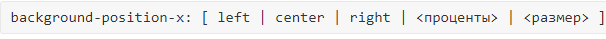
Значения
-
left
Выравнивает фон по левому краю. Эквивалент записи 0 или 0%. (Значение по умолчанию) -
center
Выравнивает фон по центру горизонтали. Эквивалент записи 50%. -
right
Выравнивает фон по правому краю. Эквивалент записи 100%. -
<проценты>
Задаёт положение фона в процентах от ширины элемента.
Значение 0% или 0 выравнивает левый край фонового изображения по левому краю элемента.
Значение 100% выравнивает правый край рисунка по правому краю элемента. -
<размер>
Задаёт положение фона в любых доступных для CSS единицах — пиксели (px), сантиметры (cm), em и др. относительно левого края элемента.
background-position-y
Задаёт положение фонового изображения внутри элемента по вертикали.
Если для элемента установлено несколько фоновых изображений, то можно изменять положение каждого изображения, перечисляя значения через запятую.
Синтаксис

-
top
Выравнивает фон по верхнему краю. Эквивалент записи 0 или 0%.(Значение по умолчанию) -
center
Выравнивает фон по центру вертикали. Эквивалент записи 50%. -
bottom
Выравнивает фон по нижнему краю. Эквивалент записи 100%. -
<проценты>
Задаёт положение фона в процентах от высоты элемента.
Значение 0% или 0 выравнивает верхний край фонового изображения по верхнему краю элемента.
Значение 100% выравнивает нижний край рисунка по нижнему краю элемента. -
<размер>
Задаёт положение фона в любых доступных для CSS единицах — пиксели (px), сантиметры (cm), em и др. относительно верхнего края элемента.
Область позиционирования фонового изображения
Если background-position позволяет задать начальное положение фонового рисунка относительно левого верхнего угла, то
background-origin задает область расположения фонового рисунка относительно границы и самого содержимого элемента.
background-origin
Определяет область позиционирования фонового рисунка.
Определяет, откуда должно начинаться background-position.
Это свойство не применяется, когда значение background-attachment задано, как fixed.
Синтаксис
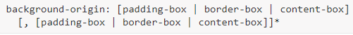
Значения
-
padding-box
Фон позиционируется относительно края элемента с учетом толщины границы. (Значение по умолчанию) -
border-box
Фон позиционируется относительно границы, при этом линия границы может перекрывать изображение. -
content-box
Фон позиционируется относительно содержимого элемента.
Значений может быть несколько (для каждого из множественных фоновых рисунков), при этом значения разделяются между собой запятой.
Результат использования значений свойства background-origin для элемента с рамкой толщиной 20 пикселей показан на рис.
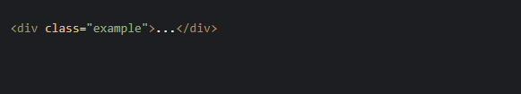
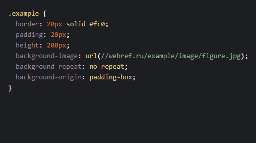 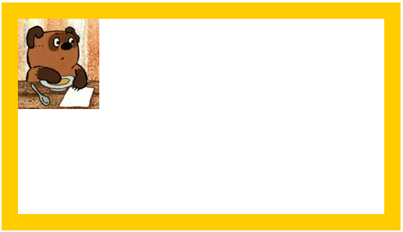
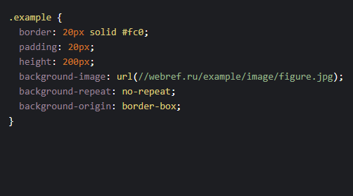 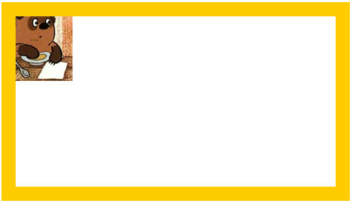
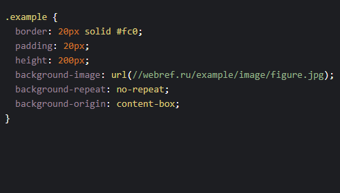 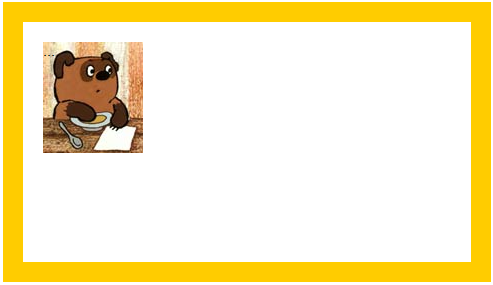
Выведение фона под границами
При задании прозрачных или пунктирных границах часто требуется, чтобы фон оставался видимым на заднем плане под границей или наоборот - занимал бы только область самого содержимого.
background-clip
Определяет, как цвет фона или фоновая картинка должна выводиться под границами.
Определяет площадь поверхности, которую охватывает фоновое изображение
Эффект заметен при прозрачных или пунктирных границах.
Синтаксис

Внедрение этого нового свойств связано с внедрением трёх новых значений: border-box, padding-box и content-box.
Значения
-
border-box
Фон выводится под границами. (Значение по умолчанию)Позволяет фоновому изображению расширяться в область границ.
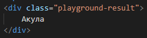
Акула.
-
padding-box
Фон отображается внутри границ.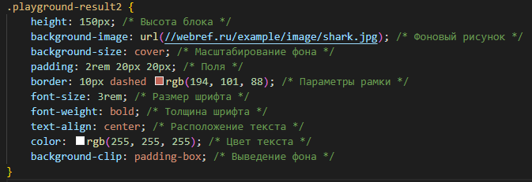 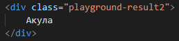
Акула.
-
content-box
Фон отображается только внутри контента.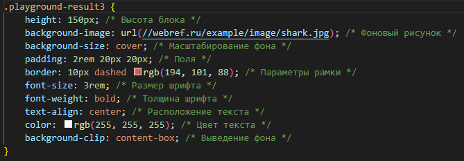 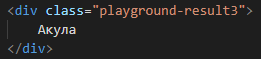
Акула
Значений может быть несколько (для каждого из множественных фоновых рисунков), при этом значения разделяются между собой запятой.
Масштабирование фонового изображения
Разрешение мониторов постоянно растёт и при вёрстке веб-страниц приходится учитывать самый широкий диапазон разрешений. Это особенно важно при использовании фонового рисунка, который либо обрезается при низком разрешении монитора, либо, наоборот, целиком не помещается при высоком разрешении.
Одним из решений подобной ситуации является масштабирование фона. Конечно, это сулит некоторые неприятности вроде появления искажений и артефактов в изображениях, но и расширяет арсенал средств вёрстки.
Размером управляет свойство background-size
background-size
Масштабирует фоновое изображение, согласно заданным размерам.
Позволяет указать размер фонового изображения.
Синтаксис
<bg-size> = [ <размер> | <проценты> | auto ]{1,2} | cover | contain
Значения
-
<размер>
Задаёт размер в любых доступных для CSS единицах — пикселях (px), сантиметрах (cm), em и др. -
<проценты>
Задаёт размер фоновой картинки в процентах от ширины или высоты элемента. -
auto
Если задано одновременно для ширины и высоты (auto auto), размеры фона остаются исходными; если только для одной стороны картинки (100px auto), то размер вычисляется автоматически исходя из пропорций картинки. (Значение по умолчанию) -
cover
Масштабирует изображение с сохранением пропорций так, чтобы его ширина или высота равнялась ширине или высоте блока. -
contain
Масштабирует изображение с сохранением пропорций таким образом, чтобы картинка целиком поместилась внутрь блока.
Примеры использования
Исходные изображения
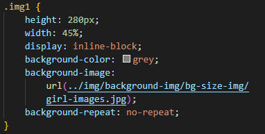 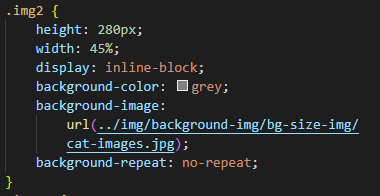 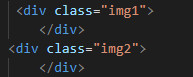
.
250px
Если установлено одно значение, оно устанавливает ширину фона, второе значение принимается за auto - тогда браузер вычисляет его автоматически, исходя из пропорций картинки. Пропорции картинки при этом сохраняются.
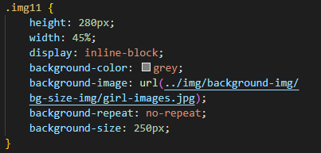 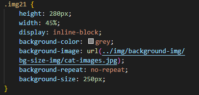 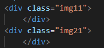
При использовании размера мы можем указать ширину и высоту с помощью двух значений разделённых пробелом.
Первое значение установит ширину фонового изображения, а второе значение его высоту.
.
100% 100%
Важно отметить, что процентная запись связана с размером элемента, а не с исходным размером фоновой картинки.
При этом пропорции игнорируются, что хорошо заметно по примеру
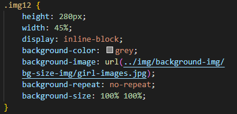 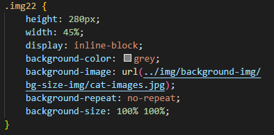 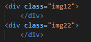
.
Ключевое слово auto может быть задействовано в качестве значения ширины или высоты, чтобы сохранить пропорции фонового изображения. Так, если мы хотим установить высоту фоновой картинки на 75% от высоты элемента при сохранении её пропорций, то можем задать значение background-size как auto 75%.
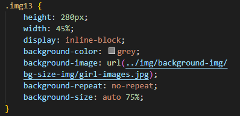 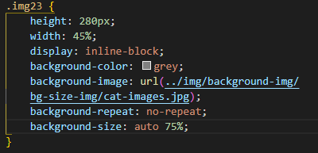 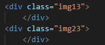
.
cover
Значение cover указывает, что фоновое изображение будет изменено, чтобы полностью закрыть ширину и высоту элемента.
Исходное соотношение сторон фоновой картинки будет сохранено, пока изображение будет растягиваться или сжиматься по мере необходимости, чтобы охватить элемент целиком.
Часто при использовании значения cover часть фонового изображения обрезается, чтобы изображение занимало всю доступную площадь элемента.
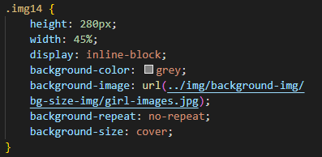 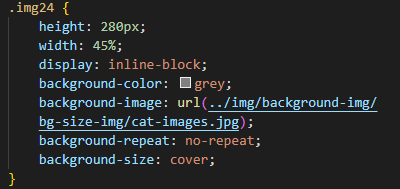 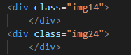
.
contain
Ключевое слово contain, с другой стороны, указывает, что фоновое изображение будет изменено, чтобы целиком вписаться в ширину и высоту элемента.
При этом исходное соотношение сторон фоновое изображение будет сохранено, но картинка будет растягиваться или сжиматься по мере необходимости, чтобы остаться в пределах ширины и высоты элемента.
В отличие от cover, ключевое слово contain всегда показывает полное фоновое изображение, при этом зачастую оно не будет занимать всю доступную площадь элемента.
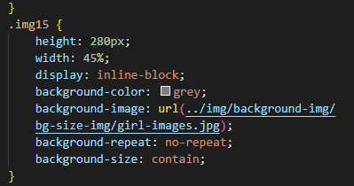 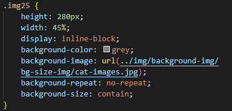 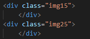
Значения cover и contain могут привести к небольшим искажениям фоновых изображений, особенно, когда картинка растягивается за пределами своих исходных размеров. Мы должны следить за этим при использовании данных значений и убедиться, что стили в результате являются подходящими.
.
Универсальное свойство background
Свойства background-color, background-image, background-repeat, background-position, background-attachment, background-origin, background-clip и background-size могут выступать значением для единичного свойства background.
background
Универсальное свойство - позволяет установить одновременно несколько характеристик фона.
Значения могут идти в любом порядке, браузер сам определит, какое из них соответствует нужному свойству. Для подробного ознакомления следует смотреть информацию о каждом свойстве отдельно. Допустимо, также, указывать параметры сразу нескольких фонов, перечисляя их через запятую.
Синтаксис
❋
-
<фон>
background-image || background-position [ / background-size ]? || background-repeat || background-attachment || background-origin || background-clip -
<последний_фон>
background-image || background-position [ / background-size ]? || background-repeat || background-attachment || background-origin || background-clip || background-color
Если наряду с фоновыми изображениями требуется задать цвет фона элемента, он указывается в последнюю очередь после перечисления.
Значения
Любые комбинации значений, разделяемых между собой пробелом, определяющих стиль фона, в произвольном порядке. Ни одно значение не является обязательным, поэтому неиспользуемые можно опустить.